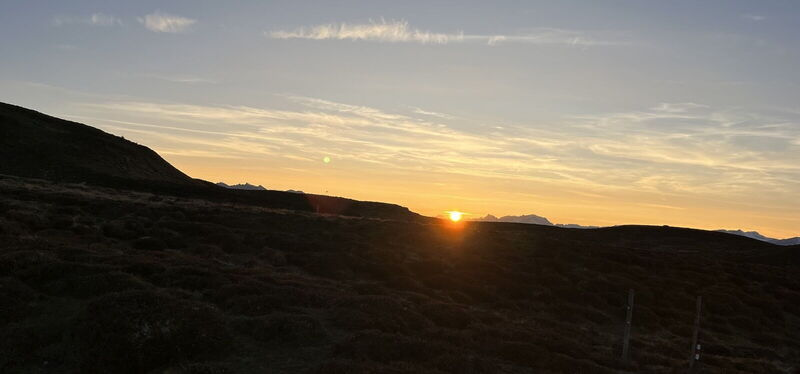

Sonnenaufgang am Stätzerhorn
Lenzerheide

Sonntag, 13. September - Spezialanlass "Communityrun" Anmeldung bis Donnerstag, 10. September
unterstützt durch graubünden Trailrun
Ein Community Run ist ein offener, gemeinsamer Lauf, bei dem nicht Leistung oder Wettkampf im Vordergrund stehen, sondern Gemeinschaft, Austausch und das gemeinsame Naturerlebnis. Er schafft Raum für Begegnung, Inspiration und ein gemeinsames Unterwegssein auf Trails – ohne Leistungsdruck.
Strecke: Heidsee – Spoina - Lavoz – Stätzerhorn –zurück über Alp Stätz bis Heidbühlbahn – Churwalden
Total 15 Km +1100 hm / -700 hm Strecke auf SchweizMobil
Eine Gruppe läuft ab Stätzerhorn gegen Fulhorn- Pradaschier-Churwalden (-1300hm)
Treffpunkt: 05.00 Uhr Parkplatz Talstation Rothornbahn Valbella / 04.30 Uhr Fahrgemeinschaft ab Chur nach Absprache
Strecke Verkürzt: bis Grat zwischen Stätzerhorn und Piz Danis, zurück zur Alp Stätz und mit Heidbühlbahn nach Churwalden
Strecke 13 Km +900 / -500 hm Strecke auf SchweizMobil
Spezielles: Sonnenaufgang auf dem Stätzerhorn – Panoramaweg
Kaffee-Gipfeli im Restaurant Portal Churwalden
Leiterteam: Alpinrunner - Leiterteam 3-4 Gruppen nach Stärkeklasse
Marco / Brigitte / Dani / Sven / Petra / Martin / Iris
Leistung: geführtes Lauftraining in Gruppen, Kaffee, Gipfeli in Churwalden
durch die Unterstützung von graubuendentrailrun.ch ist die Teilnahme kostenlos!!
wir freuen uns auf viele begeisterte Frühaufsteher!
Strecken GPX Kurz
Sunrise_Sept_26.gpxStrecken GPX Lang
Sunrise_Lang.gpxLeiterteam Petra, Marco, Brigitte, Dani, Iris, Lädi, Michi, Sven
folgende Freunde sind dabei:
- aus Datenschutzgründen werden nur Vornamen veröffentlicht
- Karolina
- Barbara
- Anita
- Sara
- Urs U.
- Micheline
- Maria
- Röbi
- Arnold
- Stephan
- Angelika
- Thomas
- Seraina
- Ayhan
- Sarah
- Hanna
- Paulin
- Jolanda
- Jörg